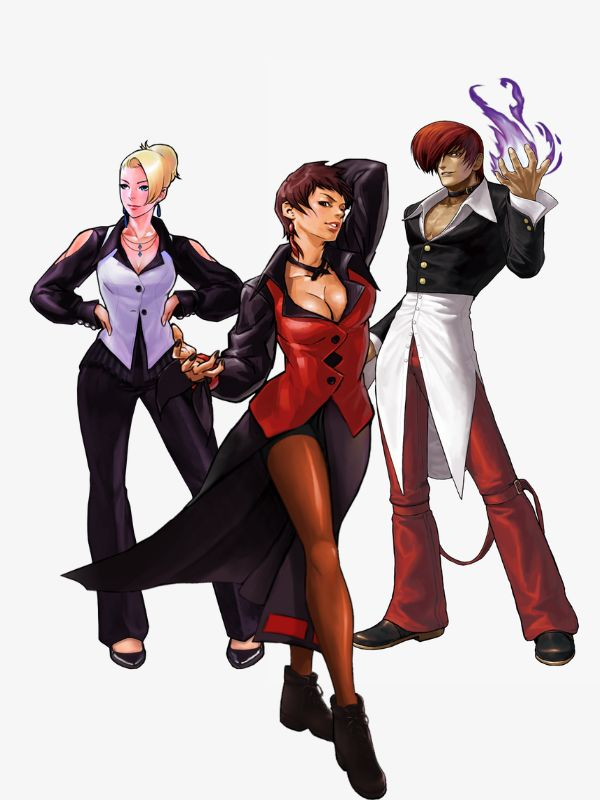
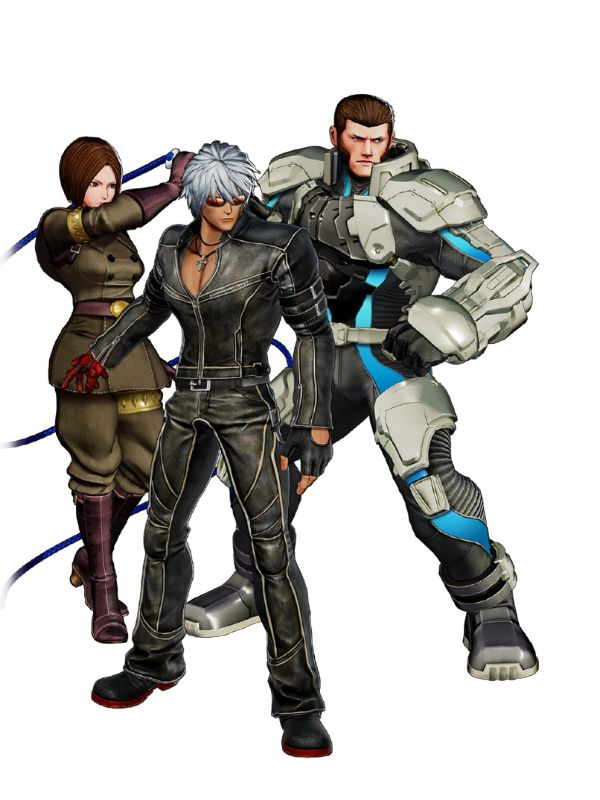

Times do kof 2002


Fightcade vem com uma implementação personalizada de GGPO e outras melhorias de emulador, tornando-o a melhor plataforma para netplay P2P baseado em rollback. Isto significa que jogos exigentes em termos de atraso de entrada e capacidade de resposta podem ser jogados na Internet com muito pouco atraso perceptível.